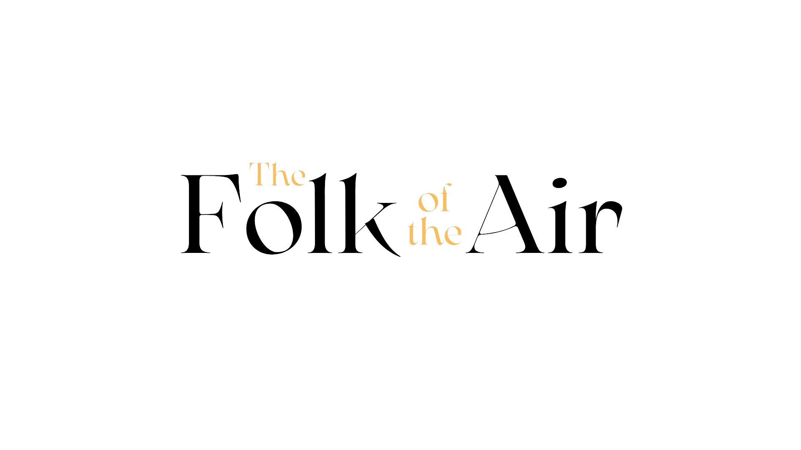
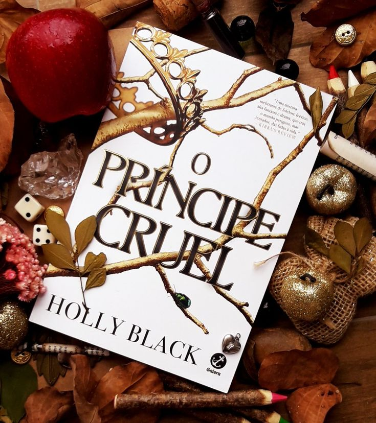
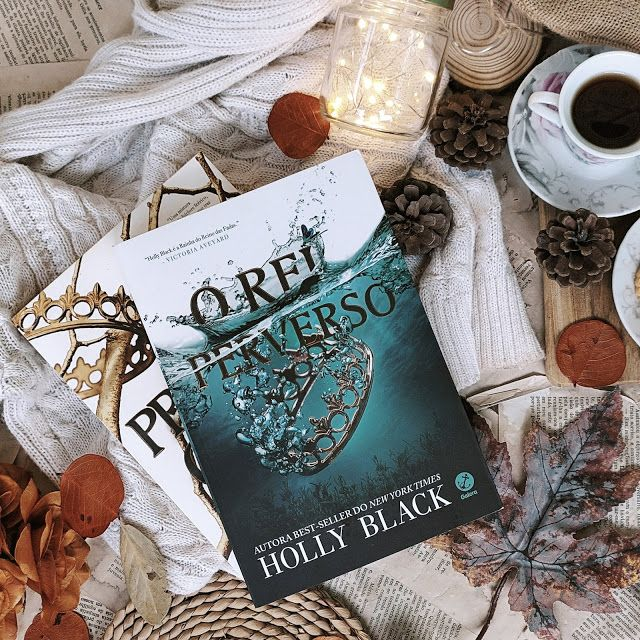
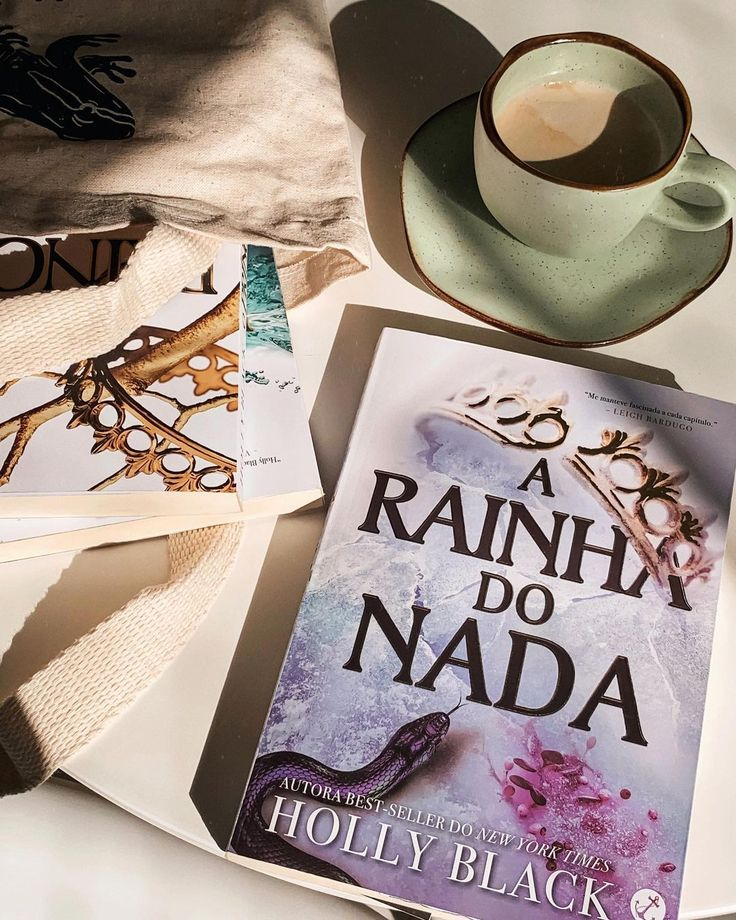

O Povo do Ar é uma trilogia de fantasia jovem adulta escrita por Holly Black.
A série segue Jude Duarte, uma garota mortal, que se envolve em intrigas palacianas
enquanto tenta ganhar um lugar na traiçoeira Corte Superior das Fadas, onde ela e suas
irmãs viveram por uma década.
1-O Príncipe Cruel

O Príncipe Cruel é o primeiro na ordem dos livros da série O Povo do Ar e inicia com
a vida de Jude dramaticamente alterada aos sete anos, quando ela e suas irmãs foram
forçadas a substituir o conforto familiar pela vida incerta no Reino das Fadas, um
mundo intrigante e traiçoeiro.
Sendo uma simples mortal, Jude tenta, uma década depois, se integrar, mas o desprezo
dos
feéricos, especialmente do príncipe Cardan, o mais jovem e cruel dos filhos do Grande Rei
de Elfhame, é um obstáculo.
Na busca pelo respeito na Corte, Jude se vê obrigada a confrontar o príncipe Cardan,
mesmo ciente das consequências potencialmente devastadoras desse ato.
Com o tempo, Jude vai se envolvendo cada vez mais nas intrigas palacianas e
descobre,
em si mesma, um talento para trapaças e combates sangrentos. No entanto, quando uma
traição ameaça afundar o Reino das Fadas em um mar de violência, ela precisará arriscar
tudo em uma aliança temerária para proteger suas irmãs e Elfhame.
No meio de mentiras e adversários que desejam sua ruína, a busca de Jude pelo
verdadeiro
significado do poder se torna crucial antes que seja tarde demais.
2-O Rei Perverso

O Rei Perverso é o segundo volume na ordem dos livros da série O Povo do Ar. Para
sobreviver no Reino das Fadas, Jude Duarte precisou aprender muitas lições. A mais
importante delas veio de seu padrasto: o poder é bem mais fácil de adquirir do que
de manter. Ela achou que, depois de enganar Cardan para que ele jurasse obedecê-la
por um ano e um dia, sua vida se tornaria mais fácil.
Agora, Cardan é o Grande Rei. Judé é a mão por trás do trono. Cinco meses já se
passaram,
e ela não conseguiu fazer nada além de dar algumas ordens banais ao rei. Se quiser guardar
o trono para seu irmão, Jude precisará pensar, e rápido, num plano para fazer Cardan se
curvar a ela por mais tempo. Mas ter qualquer influência sobre o Grande Rei de Elfhame
parece uma tarefa impossível, principalmente quando ele faz de tudo em seu poder para
humilhá-la e prejudicá-la, mesmo que seu fascínio pela garota humana permaneça intacto.
Como se não bastasse, as ondas ameaçam engolir as ilhas de Elfhame e Jude recebe um
alerta:
alguém traiu você. Mas quem? Jude precisa lutar para salvar a própria vida e a daqueles que
ama, além de lutar contra seus sentimentos conflituosos por Cardan. Em um mundo imortal, um
ano e um dia não são nada…
3-A Rainha do Nada

Em A Rainha do Nada, terceiro volume na ordem dos livros da série O Povo do Ar,
Jude, agora Grande Rainha de Elfhame, é exilada por Cardan no mundo mortal.
Determinada a reivindicar o que lhe foi tomado, ela volta ao Reino das Fadas
disfarçada de sua irmã gêmea para salvar sua vida e confrontar seus sentimentos por Cardan.
No entanto, Jude descobre que tudo mudou, a guerra se aproxima e ela precisa
resgatar a Coroa
e o amor de Cardan enquanto enfrenta seus inimigos. O destino de Jude e do reino está em jogo.
3.5-Como o Rei de Elfhame Aprendeu a Odiar Histórias
Como o Rei de Elfhame Aprendeu a Odiar Histórias é posicionado como 3.5 na ordem dos
livros da
série O Povo do Ar e mergulha na vida anterior de Cardan, o enigmático Grande Rei de Elfhame,
antes dos eventos da a série original
Este livro oferece um olhar mais profundo sobre a infância cruel e os momentos
fundamentais da
vida de Cardan. Com ilustrações deslumbrantes, a obra é um item essencial para os fãs da série,
revelando segredos e detalhes que enriquecem o universo épico e cativante de Elfhame.
Escrito como um complemento, Como o Rei de Elfhame Aprendeu a Odiar Histórias
transporta os
leitores de volta ao Reino das Fadas, apresentando a perspectiva única e envolvente de Cardan.
Holly Black

Holly Black (nascida em 10 de novembro de 1971) é uma escritora e editora americana mais conhecida
por sua
ficção infantil e juvenil. Seu trabalho mais recente é a série O Povo do Ar, best-seller do New York
Times para jovens adultos.
Ela também é conhecida por As Crônicas de Spiderwick, uma série de livros infantis de fantasia que
ela criou com o escritor e
ilustrador Tony DiTerlizzi, e sua trilogia de estreia de romances para jovens adultos oficialmente
chamada de Contos de Fadas
Moderno. Black ganhou um Eisner Award, um Lodestar Award, um Award, um Nebula Award e uma honra
Newbery.
Voltar ao topo